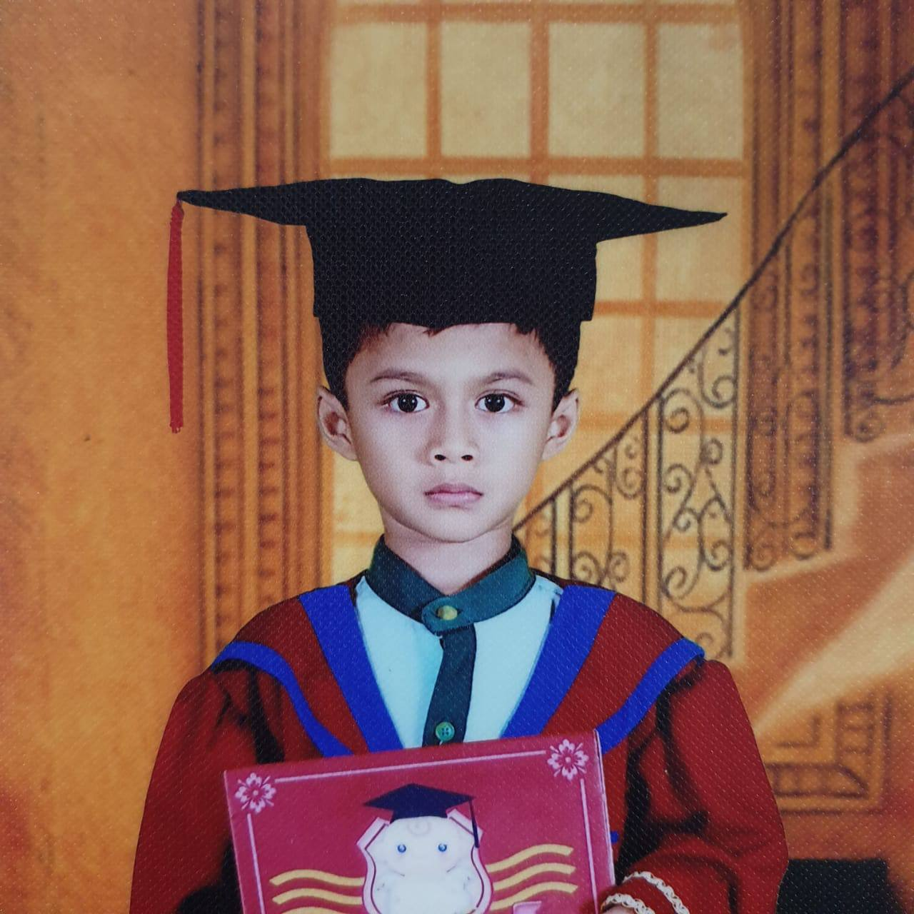
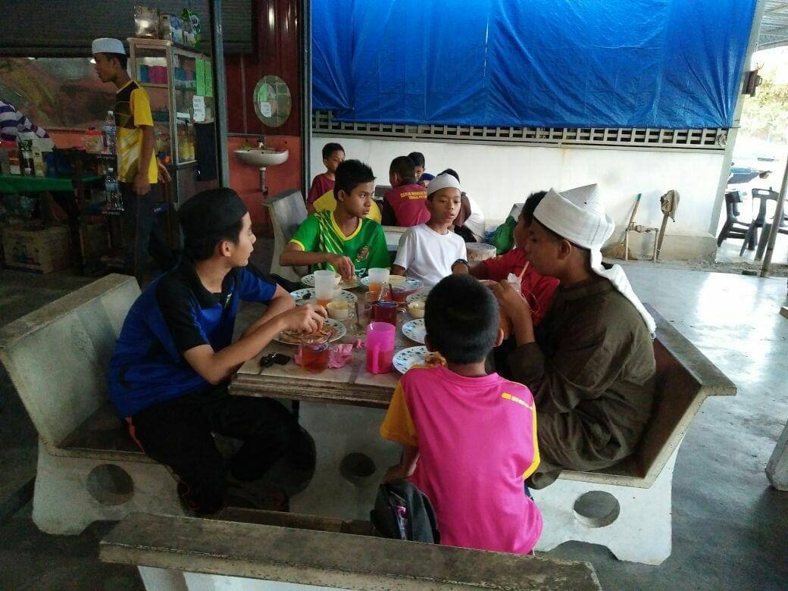
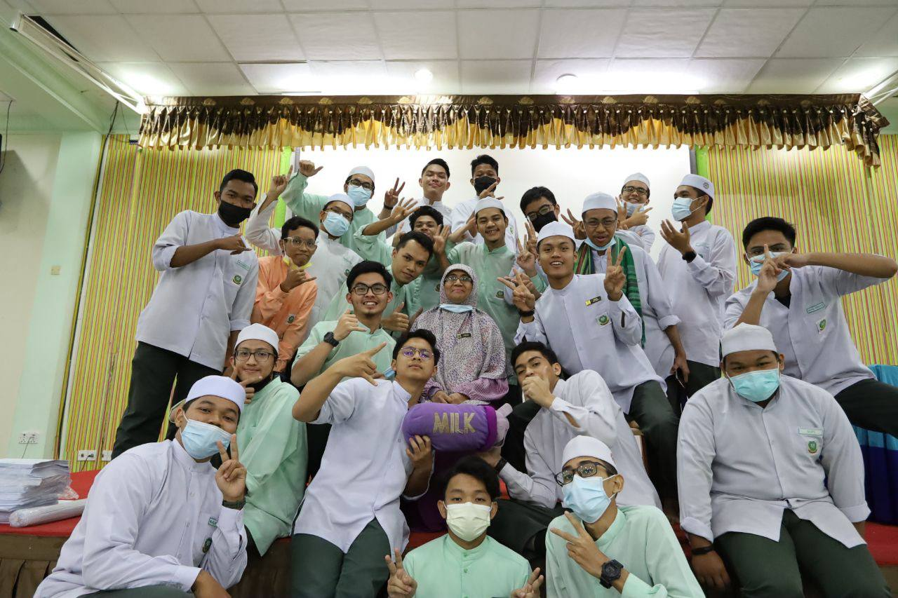
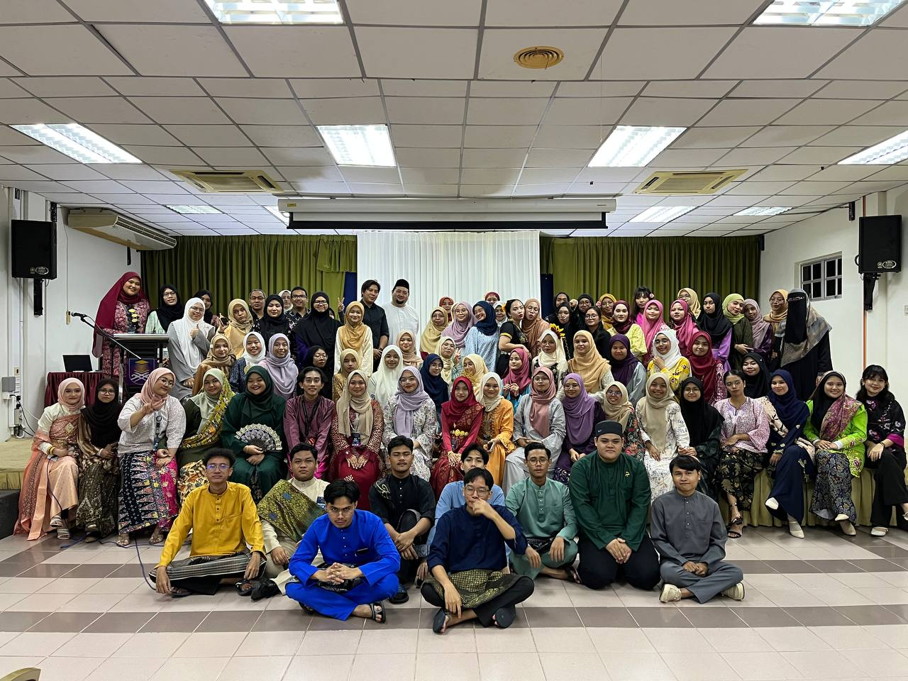

My Educational Background
I commenced my educational journey at Al-Irfan Kindergarten, Semeling, when I was only five years old. Following that, my academic pursuits led me to Al-Islah Educational Center, a distinguished Private Religious School, where I pursued my studies from Elementary School through High School. Additionally, during the ages of 14 to 15, I had the privilege of attending Maahad Tahfiz Al-Islah, where I accomplished the impressive feat of memorizing 20 Juz Al-Quran. My diligent efforts were reflected in my official examination outcomes, with UPSR yielding 3A and 2B, and SPM garnering 2A, 5B, 1C, and 1D. Upon the culmination of my tenure at Al-Islah Education Center, I proceeded to pursue a Diploma in Library Management Studies in University Technology MARA. As I proudly obtained my diploma certificate, my aspiration now lies in furthering my educational pursuits at the Bachelor and Master levels.





 HOME
ABOUT ME
EDUCATION
WORK EXPERIENCE
GALLERY
HOME
ABOUT ME
EDUCATION
WORK EXPERIENCE
GALLERY